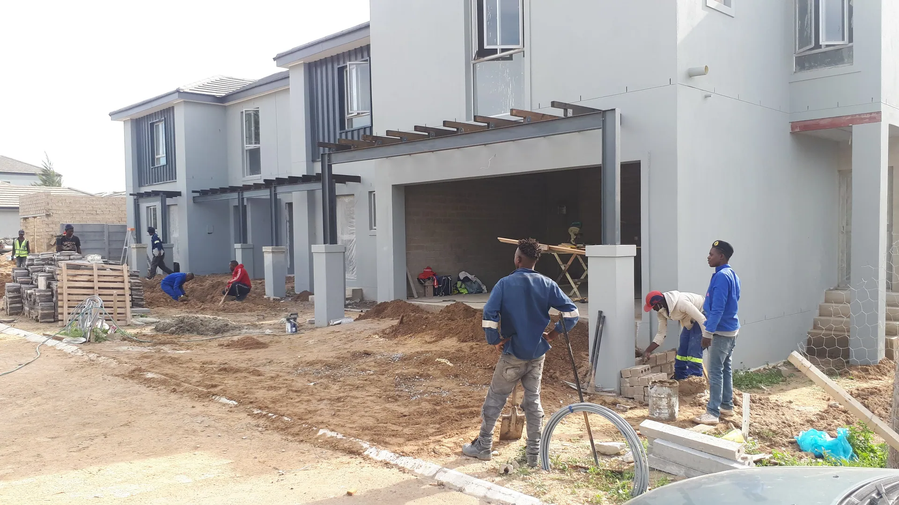
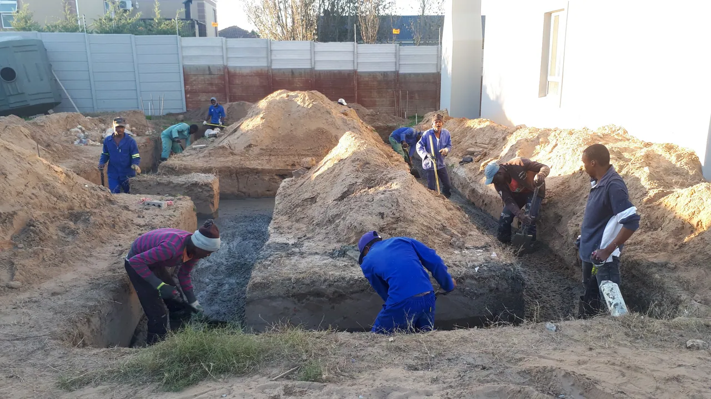

Construction and renovation
New work, alterations, fit-outs and finishes.

Company Profile
Our purpose, services, process, and selected photographic records in a concise profile.
Overview
L3 Group supports clients as they plan, build, improve, and understand their projects.
Our working focus is straightforward: bring the brief, the site, the programme and the delivery team into one clear conversation.

Capabilities
New work, alterations, fit-outs and finishes.
Groundwork, structure and early project thinking.
Scope, procurement, programme and practical delivery input.
Approach
Understand the brief, conditions and constraints.
Coordinate the people and decisions that shape progress.
Finish with attention to detail and the next owner step.
Photographic record